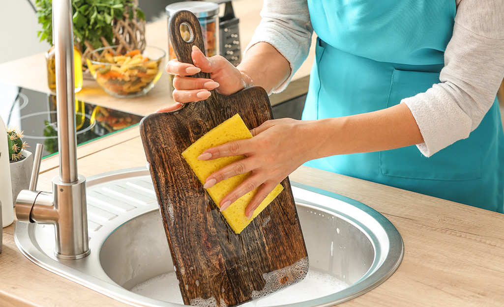
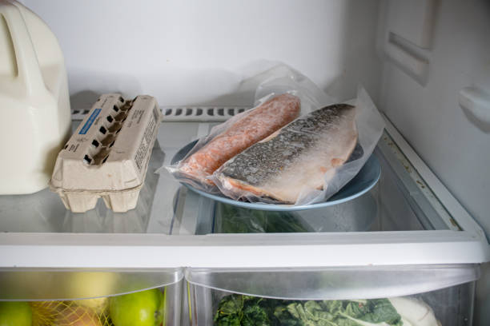
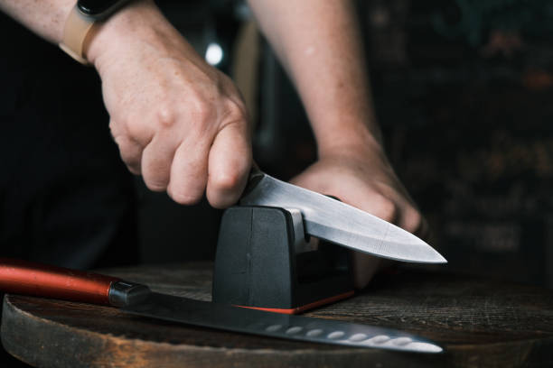

Blog
Here we share some recommended Malaysia cuisine that is worth trying.
Besides that, we had also share some article link from other side which we found to be handy and useful especially for those that are new to cooking, so definitely have a look at them.
Top Malaysia Cuisine Pick by Chef

Top 5 MUST TRY Malaysia Dishes
Here are the list of well-known Malaysia food that you have to give it a try!
Read More
5 MICHELIN Restaurant in Malaysia that offer Vegetarian Menus
Several MICHELIN restaurant in KL and Penang that are now serving standard and vegetarian tasting menus.
Read More
Kitchen Tips and Tricks for Beginners

How to clean your wood cutting board
Have you been cleaning your cutting board in the right way?
Read Full Article


How to sharpen your kitchen knives
A sharp knife is a happy knife, and it can make a better chef out of you.
Read Full Article